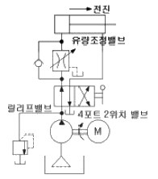
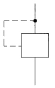
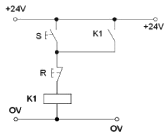
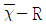

기계가공기능장 (2012-07-22 기출문제)
1과목: 임의 구분
1. 그림과 같이 실린더의 속도를 제어하기 위한 회로로서 유량제어밸브를 실린더의 입구측에 설치한 회로는?

- 무부하 회로
- 블리드 오프 회로
- 미터 아웃 회로
- 미터 인 회로
(정답률: 100%)

2. 다음 그림은 무엇을 나타내는 기호인가?

- 외부 파일럿 조작
- 단동 솔레노이드 조작
- 내부 파일럿 조작
- 유압 파일럿 조작
(정답률: 100%)
3. 스트로크 종단 부근에서 유체의 유출을 자동적으로 죄는 것에 의하여 피스톤 로드의 운동을 감속시키는 작용은?
- 실린더 쿠션
- 강압 작용
- 스틱 슬립 작용
- 에어 리턴
(정답률: 75%)
4. 공기압 장치와 비교하여 유압장치의 특징에 관한 설명으로 틀린 것은?
- 소형 장치로 큰 출력을 낼 수 있다.
- 환경 오염의 우려가 없다.
- 입력에 대한 출력의 응답이 빠르다.
- 방청과 윤활이 자동적으로 이루어진다.
(정답률: 92%)
5. 유압 실린더의 설치 구조에서 요동형 마운팅 중 하나로 실린더의 헤드 커버 혹은 로드 콕의 피스톤 로드 끝에 마운팅을 위하여 U자 형 링크를 부착한 형태는?
- 크레비스 형
- 트러니언 형
- 풋 형
- 플랜지 형
(정답률: 50%)
6. 시퀀스제어와 비교하여 자동제어의 장점에 해당되는 것은?
- 온도특성이 양호하다.
- 동작상태의 확인이 쉽다.
- 소형이 가볍다.
- 소형화에 환계가 있다.
(정답률: 54%)
7. 그림과 같은 회로처럼 스위치(S)를 ON/OFF 후 동작이 이루어지는 회로를 무엇이라 하는가?

- 자기유지회로
- 병렬회로
- OFF 회로
- ON 회로
(정답률: 54%)
8. 다음 중 반사식 광전스위치로 감지할 수 없는 물체는?
- 투명유리
- 나무제품
- 종이상자
- 플라스틱 용기
(정답률: 100%)
9. 핸들링의 종류 중 부품이 회전을 통하여 이송되며 작업이 이루어지는 핸들링은?
- 리니어 인덱싱 핸들링
- 로터리 인덱싱 핸들링
- 선반의 이송장치
- 래칫 구동 핸들링
(정답률: 79%)
10. 기계의 점검 사항 중 전자식 자동작동 장치의 일반적 점검사항에 해당하지 않는 것은?
- 필터의 막힘
- 접점의 더러워짐
- 전압, 전류
- 전원이상
(정답률: 94%)
11. 칩이 공구의 경사면을 연속적으로 흘러 나가는 모양으로 가장 바람직한 형태의 칩은?
- 유동형 칩
- 경작형 칩
- 균열형 칩
- 전단형 칩
(정답률: 100%)
12. 액체호닝에 관한 설명 중 틀린 것은?
- 가공시간이 짧다.
- 호닝 입지가 가공물의 표면에 부착될 우려가 있다.
- 가공물 표면에 산화막이나 거스러미를 제거하기 쉽다.
- 피닝 효과로 인해 가공물의 피로강도가 저하된다.
(정답률: 94%)
13. 절삭 공구 재료로서 필요한 성질이 아닌 것은?
- 고온에서 경도가 높을 것
- 내마멸성이 클 것
- 밀감보다 단단하고 인성이 있을 것
- 피삭재와의 친화력이 클 것
(정답률: 87%)
14. 절삭 유제에 대한 설명으로 틀린 것은?
- 식물성유는 동물성유에 비해 정도가 낮다.
- 식물성유는 윤활성은 좋으나 냉각성은 좋지 않다.
- 동물성유는 점도가 높아 고속절삭에 사용된다.
- 광유는 지방유 등을 혼합해서 윤활성능을 높인다.
(정답률: 67%)
15. 다음 중 래핑의 특징이 아닌 것은?
- 정밀도가 높은 제품을 가공할 수 있다.
- 가공면의 내마모성이 증대된다.
- 가공이 복잡하여 대량생산이 불가능하다.
- 가공면은 윤활성이 좋다.
(정답률: 86%)
16. 다음 중 선반 교정 작업이 아닌 것은?
- 주축대 스핀들 베어링을 교정한다.
- 가로 이송대 유극을 조정한다.
- 공구대를 교환한다.
- 가로 이송대와 세로 이송대를 보장한다.
(정답률: 80%)
17. 선반에서 앤드릴을 사용하는 주된 목적은?
- 돌기가 있어 센터 작업이 곤란하기 때문에
- 가늘고 긴 가공물의 작업을 위하여
- 내, 외경과 내경이 동심이 되도록 가공하기 위하여
- 척킹이 곤란하기 때문에
(정답률: 67%)
18. 방잔가공에 사용되는 전극재질의 조건이 아닌 것은?
- 가공속도가 클 것
- 가공전극의 소모가 클 것
- 가공정밀도가 높을 것
- 방전이 안전할 것
(정답률: 100%)
19. 연삭작업시 테리모션이라 함은?
- 일감의 이송을 양 끝에서는 빨리하고 중간에서는 늦게 하는 것
- 거친 일감의 연삭 시 원주 속도를 크게 하는 것
- 최종 다듬질 연삭 시 불꽃이 없어질 때까지 연삭하는 것
- 세로 이송을 잠시 동안 정지시킨 후 역전시켜 연삭하는 것
(정답률: 86%)
20. 선반의 절삭속도가 100mm/sec, 절삭길이가 2mm, 이송량이 1mm/rev 일 때 이 선반의 가공 절삭율은?
- 600 mm2/min
- 1000 mm2/min
- 1200 mm2/min
- 1500 mm2/min
(정답률: 50%)
2과목: 임의 구분
21. 강에 합금원소를 첨가할 경우 어닐링 상태에서 그 합금원소의 강 중 존재상태가 아닌 것은?
- 금속 간 화합물로 되어 있는 상태
- 금속단체로 되어 있는 상태
- 시멘타이트 중에 탄화물로 되어 있는 상태
- 산화물, 염화물 또는 원소 상태로 되어 있는 상태
(정답률: 70%)
22. 8개의 날을 가진 정면밀링 커터로 외경이 100mm이고, 길이 245mm인 연강을 절사갛려고 한다. 날 1개 마다의 이송을 0.04mm로 하고 절삭속도를 120m/min로 할 때 커터션 단의 공작물을 1회 절삭이송하는데 소요되는 시간은?
- 약 1분 30초
- 약 1분 45초
- 약 1분
- 약 2분 15초
(정답률: 40%)
23. 와이어 컷 방전가공의 특성이 아닌 것은?
- 초경재료 가공이 가능하다.
- 소비전력 및 전극소모가 작다.
- 와이어 재료는 Cu, Pt, Zn 등을 사용한다.
- 가공액으로는 물 등의 이온수를 사용한다.
(정답률: 70%)
24. 드릴날부의 길이가 짧을질수록 나타나는 현상이다. 맞지 않는 것은?
- 절삭성이 떨어진다.
- 웨브각이 커진다.
- 웨브의 두께가 커진다.
- 웨브의 크기를 작게 하기 위해 드레싱을 한다.
(정답률: 79%)
25. 직경 50mm, 길이 150mm의 SM45C 강 소재를 절삭 깊이 2.0mm, 이송 0.5mm/rev로 선삭할 때, VT0.1=60 이 성립된다면, 공구수명을 3시간을 보장하는 절삭속도로 깎을 때 소요가공 시간은?
- 2.0min
- 2.0sec
- 1.3min
- 1.3sec
(정답률: 57%)
26. 축의 베어링 접촉부, 각종 롤러, 초정밀 가공에 이용되며 가공물에 가압과 동시에 숫돌에 진동을 주면서 다듬질하는 가공법은?
- 호닝
- 슈퍼피니싱
- 래핑
- 숏 피닝
(정답률: 94%)
27. 가공물의 재질에 따른 드릴의 날끝 각의 범위가 적절하지 못한 것은?
- 일반재료 : 118°
- 주철 : 90~118°
- 스테인리스강 : 60~70°
- 구리, 구리 합금 : 110~130°
(정답률: 93%)
28. 복원중(문제 내용이 정확하지 않습니다. 정확한 문제 내용을 아시는 분께서는 오류신고를 통하여 내용 작성 부탁 드립니다.)
- 복원중 (정확한 내용을 아시는분 께서는 오류 신고를 통하여 내용작성 부탁 드립니다.)
- 복원중 (정확한 내용을 아시는분 께서는 오류 신고를 통하여 내용작성 부탁 드립니다.)
- 복원중 (정확한 내용을 아시는분 께서는 오류 신고를 통하여 내용작성 부탁 드립니다.)
- 복원중 (정확한 내용을 아시는분 께서는 오류 신고를 통하여 내용작성 부탁 드립니다.)
(정답률: 44%)
29. 복원중(문제 내용이 정확하지 않습니다. 정확한 문제 내용을 아시는 분께서는 오류신고를 통하여 내용 작성 부탁 드립니다.)
- 복원중 (정확한 내용을 아시는분 께서는 오류 신고를 통하여 내용작성 부탁 드립니다.)
- 복원중 (정확한 내용을 아시는분 께서는 오류 신고를 통하여 내용작성 부탁 드립니다.)
- 복원중 (정확한 내용을 아시는분 께서는 오류 신고를 통하여 내용작성 부탁 드립니다.)
- 복원중 (정확한 내용을 아시는분 께서는 오류 신고를 통하여 내용작성 부탁 드립니다.)
(정답률: 25%)
30. 복원중(문제 내용이 정확하지 않습니다. 정확한 문제 내용을 아시는 분께서는 오류신고를 통하여 내용 작성 부탁 드립니다.)
- 복원중 (정확한 내용을 아시는분 께서는 오류 신고를 통하여 내용작성 부탁 드립니다.)
- 복원중 (정확한 내용을 아시는분 께서는 오류 신고를 통하여 내용작성 부탁 드립니다.)
- 복원중 (정확한 내용을 아시는분 께서는 오류 신고를 통하여 내용작성 부탁 드립니다.)
- 복원중 (정확한 내용을 아시는분 께서는 오류 신고를 통하여 내용작성 부탁 드립니다.)
(정답률: 6%)
31. 복원중(문제 내용이 정확하지 않습니다. 정확한 문제 내용을 아시는 분께서는 오류신고를 통하여 내용 작성 부탁 드립니다.)
- 복원중 (정확한 내용을 아시는분 께서는 오류 신고를 통하여 내용작성 부탁 드립니다.)
- 복원중 (정확한 내용을 아시는분 께서는 오류 신고를 통하여 내용작성 부탁 드립니다.)
- 복원중 (정확한 내용을 아시는분 께서는 오류 신고를 통하여 내용작성 부탁 드립니다.)
- 복원중 (정확한 내용을 아시는분 께서는 오류 신고를 통하여 내용작성 부탁 드립니다.)
(정답률: 60%)
32. 공구수명을 T, 절삭속도를 V, n을 지수, C를 상수라 할 때 Taylor의 공구수명 공식은?
- Tn = VC
- Tn = C/V
- Tn = V/C
- Tn = 2VC
(정답률: 74%)
33. 온도가 변화해도 열팽창계수, 탄성계수 등이 거의 변하지 않는 불변강에 포함되지 않는 것은?
- 인바
- 엘린바
- 인코넬
- 플래티나이트
(정답률: 65%)
34. 탄소강에 함유되어 탄소강의 성질에 영향을 많이 끼츠는 5대 원수와 가장 거리가 먼 것은?
- Mn
- Si
- Ag
- P
(정답률: 75%)
35. 강재를 가열하여 그 표면에 Zn을 고온에서 확산 침투시켜 내식성 향상을 목적으로 하는 금속 침투법은?
- 크로마이징
- 칼로라이징
- 브로나이징
- 세라다이징
(정답률: 75%)
36. 20℃에서 길이 100mm인 형강이 30℃에서는 길이 102mm 가 되었다면 열팽창계수(1/℃)는 얼마인가?
- 2×10-1
- 2×10-3
- 2×10-4
- 2×10-6
(정답률: 100%)
37. 내식용 알루미늄 합금의 종류에 속하지 않는 것은?
- 알드레이
- 알민
- 하이드로날륨
- 라우탈
(정답률: 47%)
38. 1978년 E.R.Evans가 개발한 주철로서 구상흑연과 편상흑연의 중간형태의 흑연으로 형성된 조직의 주철은?
- CV 주철
- 칠드주철
- 가단주철
- 미하나이트 주철
(정답률: 73%)
39. 실용 활동 중 cartridge brass 라고 불리며, 연신율이 크고 인장강도가 높아 냉간 가공용으로 주로 사용되는 황동의 조성 비율은?
- 70% Cu – 30% Zn
- 65% Cu – 35% Zn
- 60% Cu – 40% Zn
- 95% Cu – 5% Zn
(정답률: 89%)
40. 미터나사의 수나사 유효지름을 측정하는 식으로 맞는 것은? (단, d2 : 유효지름, d : 삼침 지름, p : 나사 피치, M : 삼점 접촉 후의 외축 치수)
- d2 = M–2d+0.866028×p
- d2 = M–3d+0.866028×p
- d2 = M–2d+0.960491×p
- d2 = M–3d+0.960491×p
(정답률: 알수없음)
3과목: 임의 구분
41. 정반 위에서 200mm의 사인바를 이용하여 10° 크기의 각도를 만들려고 한다. 이 때 사인바 양단의 게이지 블록 높이 차는 약 몇 mm 인가?
- 27.34
- 17.36
- 34.73
- 24.72
(정답률: 84%)
42. 다량의 제품의 치수가 허용치수 이내에 있는 가를 검사하기에 가장 적합한 게이지는?
- 다이얼 게이지
- 한계 게이지
- 버니어 캘리퍼스
- 마이크로미터
(정답률: 93%)
43. 촉침식 표면거칠기 측정기의 검출기에 대한 설명으로 틀린 것은?
- 검출기는 촉침의 기계적인 수직방향의 상하, 변위를 그 변위의 크기에 비례하는 전기식 신호로 바꾸는 장치이다.
- 정적 검출기는 촉침의 수직 위치에만 감응하며 검출하여 위치, 변화에 따른 변위를 전기적 신호로 바꾸는 장치이다.
- 동적 검출기는 촉침이 수직운동으로 하고 있을 때만 그 변위에 비례하는 전기적 신호를 내며, 촉침이 정지해 있을 때는 전기적 신호는 나오지 않는다.
- 정적 검출기의 대표적인 형식은 압전형 검출기이고, 동적 검출기의 대표적인 형식은 인덕턴스 변화형 검출기이다.
(정답률: 36%)
44. 3차원 측정기를 이용하여 기계부품의 평면도를 구하기 위해 필요한 최소 측정점의 수는 몇 개인가?
- 3개
- 4개
- 5개
- 6개
(정답률: 80%)
45. 공작물 관리방법 중 육면체의 가장 이상적인 위치 결정법은?
- 2-1-1
- 3-1-1
- 2-2-1
- 3-2-1
(정답률: 92%)
46. 공작물의 수량이 적가나 정밀도가 요구되지 않는 경우에 활용하며, 가장 경제적이고 간단하며 단순하게 생산속도를 증가시키기 위하여 사용되는 지그는?
- 형판 지그
- 링형 지그
- 바이스형 지그
- 펌프 지그
(정답률: 92%)
47. 드릴 부시의 설계 순서 중 가장 먼저 결정해야 할 사항은?
- 부시의 내 외경의 결정
- 부시의 길이와 지그판 두께 결정
- 드릴 지름 결정
- 부시의 위치 결정
(정답률: 93%)
48. 공작물을 클램핑 할 때 힌지, 핀을 사용하여 공작물을 장, 탈착하며, 불규칙하고 복잡한 형태의 소형 공작물에 적합한 지그는?
- 박스형 지그
- 바이스형 지그
- 리프형 지그
- 분할형 지그
(정답률: 73%)
49. 공작물의 재질과 형상에 따라 클램핑 시 공작물이 불안정해질 수 있는데, 다음 중 공작물이 불안정해지는 요인으로 거리가 먼 것은?
- 공작물의 두께가 얇을 때
- 재질의 탄성계수가 클 때
- 변형하기 쉬운 형상일 때
- 직각도가 나쁠 때
(정답률: 82%)
50. 1800rpm으로 회전하는 스핀들에서 2회전 드웰을 주려고 할 때 정지시간은?
- 0.⑤초
- 0.08초
- 1.2초
- 1.5초
(정답률: 93%)
51. 와이어 컷 방전가공의 가공 역으로 물을 사용했을 때 장점이 아닌 것은?
- 취급이 용이하고 화재의 위험이 없다.
- 공작물과 와이어 전극을 빨리 냉각시킨다.
- 전극에 강제 진동을 발생시켜 극간 접촉을 원활하게 도와준다.
- 가공시 발생 되는 불순물의 배제가 용이하다.
(정답률: 94%)
52. CNC 선반 프로그래밍에서 N30 M98 P0010 L2 ; 라고 지령되었을 때 L의 의미는?
- 반복횟수
- 전개번호
- 보조 프로그램 번호
- 주 프로그램 번호
(정답률: 100%)
53. 다음 중 솔리드 모델링의 특징이 아닌 것은?
- 은선 제거가 가능하다.
- 불 연산에 의하여 복잡한 형상표현이 어렵다.
- 형상을 절단하여 단면도 작성이 용이하다.
- 물리적 성질의 계산이 가능하다.
(정답률: 알수없음)
54. 다음 중 머시닝 센터에서 NC 프로그램에 사용하는 좌표계가 아닌 것은?
- 공작물 좌표계
- 구역 좌표계
- 기계 좌표계
- 공구 좌표계
(정답률: 73%)
55. 축의 완성지름, 철사의 인장강도, 아스피린 순도와 같은 데이터를 관리하는 가장 대표적인 관리도는?
- c 관리도
- np 관리도
- u 관리도

관리도
(정답률: 82%)
56. 로트의 크기가 시료의 크기에 비해 10배 이상 클 때, 시료의 크기와 합격판정개수를 일정하게 하고 로트의 크기를 증가시킬 경우 검사특성곡선의 모양 변화에 대한 설명으로 가장 적절한 것은?
- 무한대로 커진다.
- 별로 영향을 미치지 않는다.
- 샘프링 검사의 판별 능력이 매우 좋아진다.
- 검사특성곡선의 기울기 경사가 급해진다.
(정답률: 70%)
57. 작업시간 측정방법 중 직접측정법은?
- PTS법
- 경험견적법
- 표준자료법
- 스톱워치법
(정답률: 82%)
58. 준비작업시간 100분, 개당 정미작업시간 15분, 로트 크기 20 일 때 1개당 소요작업시간은 얼마인가? (단, 여유시간은 없다고 가정한다.)
- 15분
- 20분
- 35분
- 45분
(정답률: 91%)
59. 소비자가 요구하는 품질로서 설계와 판매정책에 반영되는 품질을 의미하는 것은?
- 시장품질
- 설계품질
- 제조품질
- 규격품질
(정답률: 100%)
60. 다음 중 샘플링 검사보다 전수검사를 실시하는 것이 유리한 것은?
- 검사항목이 많은 경우
- 파괴검사를 해야 하는 경우
- 품질특성치가 치명적인 결정을 포함하는 경우
- 다수 다량의 것으로 어느 정도 부적합종의 섞여도 괜찮을 경우
(정답률: 100%)